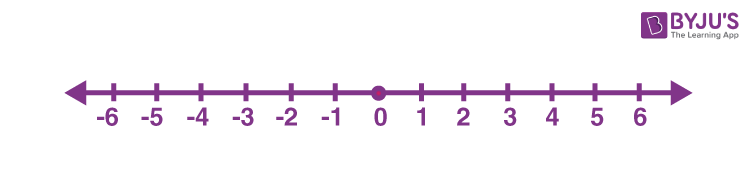
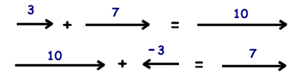

Math Notes - Episode 1
Math Notes - Episode 1
Vector & Dot products
Based on Freya Tutorial
Hey there. I decided to start a new passion for Maths :’).
Here are some notes taken on a base material offered to us by the great Freya Holmer.
Those personnal notes will follow the video timestamps.
Content
- Why Maths ?
- 1D Vectors (a.k.a Scalar, Floats, Numbers)
- 2D Vectors
- Vector normalization
- Direction to point
- Length
- Distance
- Point along a direction
- Radial Trigger
- Dot Product
- Assignements ?
- Personnal Maths Notes
Why Maths ?
So… I decided to focus more myself on math after rewatching the whole Astortion’s Devlog by aarthificial. Recently, he linked a video about Procedural Animations from t3ssel8r which impressed me a lot. I’ve seen this kind of work before, but those guys approch it from an analytical perspective and an elegant equation solving manner.
That was enought to get me started. I’ve already a bunch of ressources on Game Dev Maths which I’ll probably link and store there one day. But for now on, let’s start with freya’s stuff.
1D Vectors (a.k.a Scalar, Floats, Numbers)
We start working with “one dimension vectors” because the same principles apply to higher dimension vectors.
In one dimension, the numbers are treated as float, scalar or single value.
This is a number line : 
- It lies in one dimensional space
- It help visualize integers and space in between (floating points)
- Range from [-$\infty$, +$\infty$]
Here numbers can be considered as vectors, distance from origins, steps…
They acts as the representation of something, and within the same context, numbers can be interpreted in multiples ways.
They can be treated in the same manner than higher dimensional vectors:
- Length (always positive) | Can be called
magnitude
# x is a one dimension vector abs(x) = length # > 0 - Direction (-1 or 1) | Called sign in one dimension
# x is a one dimension vector sign(x) = 1, -1 or error - Distance (Signed Distance exists aswell !)
# a and b are one dimension vectors dist(a, b) = |a - b| (or |b - a|) dist(a,b) = abs(a - b) dist(a,b) = abs(b - a) #... - Addition (or Substraction)

In this context :
- Addition is an offset
- Multiplication is a scale
With this basic knowledge, let’s move one dimension higher ! ___
2D Vectors
Vector normalization
Direction to point
Length
Distance
Point along a direction
Radial Trigger
Dot Product
Assignements ?
Personnal Maths Notes
- Basics
Addition to Substraction : $a+b = a + (-b)$
Multiply to Divide : $^a/_b = a.(^1/_b)$